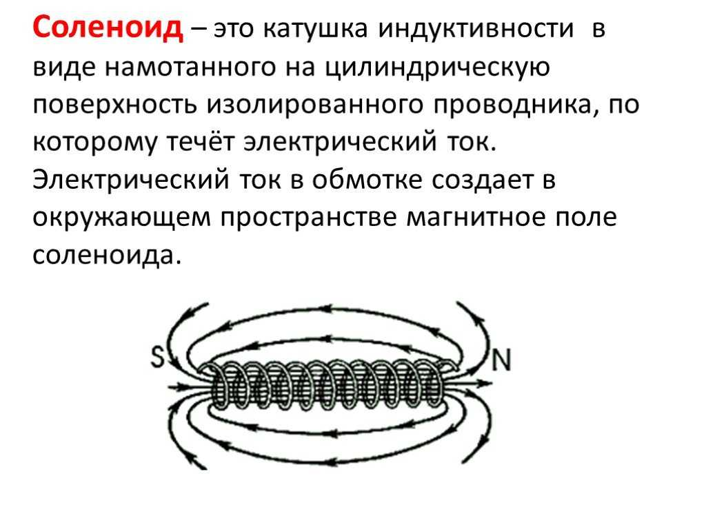

Из провода длиной L и диаметром d требуется намотать катушку на цилиндрический
каркас диаметром D и длиной l, таким образом, чтобы получить максимальную индукцию
магнитного поля на оси катушки в центре. Число витков N должно быть одинаково по
всей длине катушки. Определите индуктивность получившейся катушки. Параметры
должны задаваться. Построить график зависимости В=f(l).
Входные параметры: длина провода, диаметр провода, длина каркаса, диаметр каркаса. Итоговый вид модели: график зависимости В=f(l).
Решение
Физические понятия
1. Индуктивность катушки (L): физическая величина, характеризующая способность катушки создавать индуктивное
электромагнитное поле при прохождении через неё переменного тока. Измеряется в генри (Гн).
2.Индукция магнитного поля (B): векторная физическая величина, которая характеризует магнитное поле в точке пространства и в любой момент времени. Измеряется в теслах (Тл).

Вывод формул
Для начала определим необходимые формулы:
I. Определим индуктивность получившейся катушки 1. Количество витков N на катушке:
\[ N_{1} = \frac{L}{\pi \cdot D}, \, \, \, N_{2} = \frac{l}{d} \]
\[ \text{где } L \text{ - длина провода, } d \text{ - диаметр цилиндрического каркаса, } l \text{ - длина цилиндрического каркаса, } D \text{ - диаметр цилиндрического каркаса.} \]
Может быть 3 ситуации:
1. Короткий провод - тогда он займет не всю катушку. Тогда будем использовать формулу, где учитывается длина провода (по 1 формуле).
2. Может быть такое, что цилиндрический каркас короткий, тогда часть провода будет висеть, следовательно - рассчитываем количество витков по второй формуле.
3. Когда расчеты по двум формулам равны - весь провод намотали на катушку. Тогда нет разницы по какой формуле считать
Таким образом, количество витков буду расчитывать по следующей формуле $$ N = min(N_{1}, N_{2}) = min (\frac{L}{\pi \cdot D}; \frac{l}{d}); $$
2. Площадь поперечного сечения круга через его диаметр:
\[ S = \pi \cdot r^2 \]
где \( r \) - радиус круга.
Если известен диаметр круга \( D \), то радиус \( r \) можно найти, разделив диаметр на 2:
\[ r = \frac{D}{2} \]
Таким образом, площадь поперечного сечения через диаметр круга будет:
\[ S = \pi \cdot \left( \frac{D}{2} \right)^2 \]
3. Выведем формулу индуктивности:
Согласно основному соотношению, связывающему между собой ток I и поток \(Ф_B\), индуктивность проводника определяется выражением:
\[ L = \frac{Ф_B}{I} = \frac{\iint_{S} \vec{B} d \vec{S} }{I} \]
Применим эту формулу для расчета индуктивности прямого длинного соленоида.
Имеем: \[ B = \mu_0 \cdot \mu \cdot H = \mu_0 \cdot \mu \cdot \frac{N}{l} \cdot I \]
\[ H = n \cdot l = \frac{N}{l} \cdot I \]
\[ \text{где } n \text{ - плотность намотки витков } \]
Поток магнитной индуктивности через один виток катушки \[ Ф_{1} = \iint_{S} \vec{B} d \vec{S}, \, \, (\vec{B} ⊥ d \vec{S}); \]
Через все N витков поток равен: \(Ф_B = N \cdot Ф_{1} = N \cdot B \cdot S = \mu_0 \cdot \mu \cdot \frac{N^2}{l} \cdot S \cdot I \)
Поделив это выражение на I, аходим искомую индуктивность соленоида:
\[ L = \frac{Ф_B}{I} = \mu_0 \cdot \mu \cdot \frac{N^2}{l} \cdot S = \mu_0 \cdot \mu \cdot \frac{N^2}{l} \cdot \pi \cdot \left( \frac{D}{2} \right)^2 \]
По условию \( \mu = 1 \)
\[ L = \mu_0 \cdot \frac{N^2}{l} \cdot \pi \cdot \left( \frac{D}{2} \right)^2 \]
II. Построить график зависимости В=f(l)
Таким образом, 1 часть задания определила как решить. Осталось построить график зависимости В = f(l). В условии силы тока нет, поэтому я предпологаю, что здесь имеют в виду за ось абсцисс - длина катушки, ординат - отношение \( \frac{B}{I} \).
По условию \( \mu = 1 \)
\[ B = \mu_0 \cdot \frac{N}{l} \cdot I \]
\[ \frac{B}{I} = \mu_0 \cdot \frac{N}{l} \]
Код:
1. Получаем значения параметров из полей ввода:
let wireLength = parseFloat(document.getElementById('wire-length').value); // L
let wireDiameter = parseFloat(document.getElementById('wire-diameter').value) / 1000; //d переводим из мм в м
let frameLength = parseFloat(document.getElementById('frame-length').value); // l
let frameDiameter = parseFloat(document.getElementById('frame-diameter').value); // D
2. Вычисление площади поперечного сечения катушки:
let frameRadius = frameDiameter / 2;
let coilArea = Math.PI * Math.pow(frameRadius, 2);
3. Вычисление количества витков N на катушке:
let N_1 = wireLength / (Math.PI * frameDiameter);
let N_2 = frameLength / wireDiameter;
let N = Math.floor(Math.min(N_1, N_2));
4. Вывод результатов:
let calculationsDiv = document.getElementById('calculations');
calculationsDiv.innerHTML = Результаты расчета:
Число витков катушки (N): ${N}
Индуктивность катушки (L): ${inductance.toFixed(10)} Гн;
5. Построение графика:
let data = [];
for (let l = 0.1; l <= frameLength; l += 0.01) { // Проходим по длинам катушек от 0.1 до frameLength
let B = mu0 * N / l; // Расчет индукции магнитного поля B
data.push([l, B]); // Добавляем точку (l, B) в массив данных
}
6. Используем библиотеку Plotly для построения графика:
Plotly.newPlot('plot', [{
x: data.map(point => point[0]), // Длина катушки
y: data.map(point => point[1]), // Индукция магнитного поля B
mode: 'lines',
type: 'scatter',
name: 'B от l',
line: {
color: 'rgb(178, 102, 255)',
}
}], {
xaxis: {
title: 'Длина катушки (м)',
},
yaxis: {
title: 'B/I'
},
title: 'Зависимость индукции магнитного поля B от длины катушки'
});